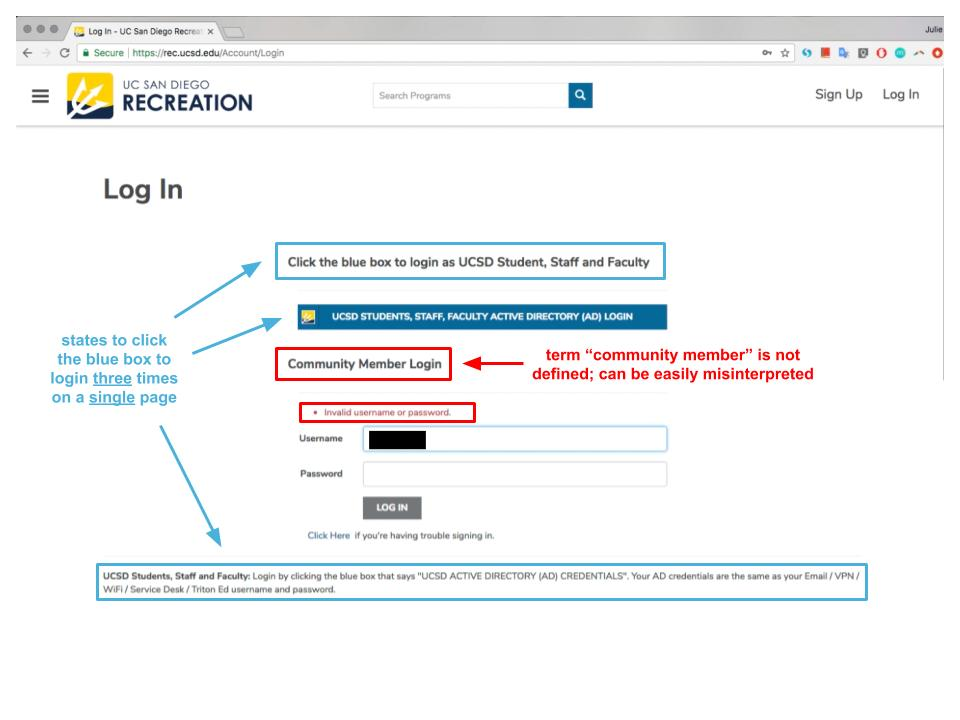

UCSD Recreation
Redesign based on interviews and human centered design.
UCSD Recreation
Redesign based on interviews and human centered design.
Interviews
Location: Geisel Library because we wanted to see how different types of students interact with the website. At the library we believed we would find a range of students, starting from those who rarely take a UCSD recreation class to those that frequently take them. This is in opposition to interviewing at RIMAC gym where the majority are more likely to frequent the UCSD Recreation website.
Task: Add a "Moonlight Kayak" trip to the shopping cart.
Recording Method: we collected the interviewees interaction with the website by recording our laptop screens, while having someone note slips and mistakes in a notebook as well. This made it easier to provide evidence of the slips and mistakes that students made.
Post Interview QuestionsThe Data
 Additional Notes
Additional Notes
Error Analysis
Knowledge-Based Mistakes
User Testing
Final Design + Reflection